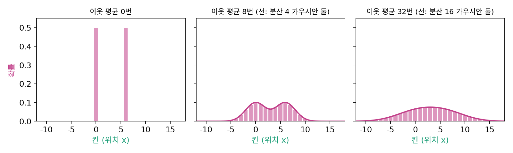

열 방정식: 잡음 섞인 분포가 퍼지는 규칙
그림 한 장에 잡음이 어떻게 섞이는지는 알았다. 그런데 생성 모델이 배우는 것은 그림 한 장이 아니라 그림들의 분포다. 학습 데이터의 그림 수만 장에 저마다 잡음을 섞으면, 잡음 섞인 그림들의 분포는 시간이 흐르며 어떻게 바뀔까? 그림 한 장 한 장은 제멋대로 흔들리지만, 모아 놓은 분포는 어떤 정해진 규칙을 따를까?
칸 위의 말들
가장 단순한 경우로 줄여 보자. 공간을 1차원 칸으로 나누고, 데이터 그림이 단 두 장, 칸 0과 칸 6에 놓여 있다고 하자. 그림마다 말을 하나씩 세우고, 한 걸음마다 말을 1/4의 확률로 왼쪽, 1/2의 확률로 제자리, 1/4의 확률로 오른쪽으로 옮긴다. 평균은 0이고 분산이 1/2인 잡음 한 걸음이다. 말 40만 개를 32걸음 옮긴 뒤 세어 보면, 칸 0에 선 말은 6.52%, 두 그림 한가운데인 칸 3에 선 말은 7.57%다.
말을 하나하나 옮기지 않고 확률표만 갱신할 수도 있다. 한 걸음 뒤 칸 i에 있을 확률은 왼쪽 칸에서 1/4, 제자리에서 1/2, 오른쪽 칸에서 1/4이 모인 것이다.
칸마다 확률을 자기와 양옆 칸의 가중 평균으로 바꾸는 것이다. 이 이웃 평균을 32번 하면 칸 0이 6.60%, 칸 3이 7.53%로 말을 세어 얻은 값과 맞고, 확률의 합은 몇 번을 해도 정확히 1이다. 말 하나하나는 제멋대로 움직이지만, 많이 모은 분포는 이웃 평균이라는 정해진 규칙을 따른다.

칸을 잘게 나누면
칸 간격과 걸음 시간을 한없이 잘게 나누면, 「이웃의 평균 − 자기 값」은 위치로 두 번 미분한 값에 비례하게 되고, 이웃 평균의 규칙은 다음 방정식이 된다.
왼쪽 식을 열 방정식 (한 자리의 값이 둘레 평균과의 차이에 비례하는 빠르기로 바뀌는 방정식 / heat equation)이라 한다. 1800년대 초 열이 고체 속으로 퍼지는 법칙을 찾던 푸리에가 처음 방정식으로 적어서 이런 이름이 붙었다. 한 자리의 밀도가 둘레 평균보다 낮으면(골짜기) 차오르고, 높으면(봉우리) 깎인다. 그래서 열 방정식은 고르게 만드는 방정식이다.
가운데 식은 이 방정식의 답이다. 데이터의 점마다 표준편차 σt인 가우시안 종을 하나씩 씌워 모두 더하면 시간 t의 분포가 된다. 이렇게 한 모양의 점마다 다른 모양을 씌워 더하는 계산을 합성곱(convolution)이라 부른다. 잡음 섞인 분포 pt는 데이터 분포와 가우시안의 합성곱이다.
ML에서: 같은 이웃 평균이 픽셀 평면에서 돌면 블러
그림 편집 프로그램의 가우시안 블러도 같은 이웃 평균이다. 그림 한 장의 픽셀마다 밝기를 이웃 픽셀들과 (1/4, 1/2, 1/4) 같은 고정된 무게로 평균 내기를 되풀이하면 블러가 되고, 표준편차 σ픽셀인 가우시안 블러는 픽셀 평면에서 열 방정식을 σ² = 2Dt가 되는 시간만큼 돌린 것과 같다. 다만 퍼지는 것과 퍼지는 곳이 다르다. 블러에서는 그림 한 장의 밝기가 가로세로 2차원 평면에서 퍼지고, 순방향 과정에서는 그림들의 확률이 픽셀 수만큼의 차원을 가진 데이터 공간에서 퍼진다. 둘을 헷갈리면 어떤 일이 생기는지는 아래 문제에서 본다.
이웃 칸의 값에 고정된 무게를 곱해 더하는 이 계산은 그림 처리의 기본 동작이다. 무게를 미리 정해 두면 블러이고, 무게를 데이터에서 배우게 하면 그림을 읽는 신경망의 부품이 된다.
문제 4. 주사위로 움직이는 말
보드게임 말이 칸 0에 있다. 주사위를 던져 1·2가 나오면 왼쪽으로 한 칸, 3·4면 제자리, 5·6이면 오른쪽으로 한 칸 간다. (가) 두 번 던진 뒤 말이 칸 −2, −1, 0, 1, 2에 있을 확률은? (나) 확률표의 칸마다 「자기와 양옆 칸, 셋의 평균」으로 바꾸는 일을 두 번 하면 같은 표가 나오는가? (다) 열두 번 던진 뒤 말의 위치는 표준편차 몇 칸만큼 퍼지는가?

(가)는 경우를 다 적었어요. 두 번 던지면 3 × 3 = 9가지고, 칸 0이 되는 건 (왼, 오), (제, 제), (오, 왼) 세 가지예요. 칸 −2부터 2까지 1/9, 2/9, 3/9, 2/9, 1/9요.

(나)는 처음 표가 칸 0에만 1이니까, 한 번 평균 내면 칸 −1, 0, 1에 1/3씩. 한 번 더 하면 칸 0은 1/3 세 개의 평균이라 3/9, 칸 1은 1/3 두 개와 0의 평균이라 2/9. 같은 표야.

말을 옮기는 것과 표를 평균 내는 것이 왜 같을까요?

칸 1에 올 수 있는 건 칸 0, 1, 2에 있던 말이 각각 1/3의 확률로 오는 거니까요. 말을 굴리는 쪽에서 보면 「어디로 갈까」고, 표를 고치는 쪽에서 보면 「어디서 올까」인데, 확률이 대칭이라 같은 셈이 돼요.

(다)는 열두 번이면 한 번에 최대 한 칸씩이니까… 표준편차가 12의 몇 분의 일쯤?
한 번 던질 때 위치의 분산부터 구해 봐요.

−1, 0, 1이 1/3씩이니까 (1 + 0 + 1)/3 = 2/3이요. 던질 때마다 서로 상관없으니까 분산이 더해져서 12 × 2/3 = 8, 표준편차는 √8 = 2.83칸이에요. 등굣길 문제랑 같은 계산이네요.
파스칼의 삼각형에서 줄마다 위의 두 수를 더하던 게 이웃 평균을 되풀이하는 거였구나. 수업에서 그 줄이 점점 종 모양이 된다고 배웠는데.
문제 5. 두 봉우리가 하나로
데이터가 두 점 −2와 2(반반)이고, σt² = 2Dt(D = 4)로 잡음을 섞는다. 시간 t의 밀도는 pt(x) = ½N(x; −2, σt²) + ½N(x; 2, σt²)이다. (가) 두 봉우리가 하나로 합쳐지는 것은 σt와 t가 얼마일 때인가? (나) t = 0.25에서 x = 0과 x = 1의 밀도가 정말 열 방정식대로 바뀌는지 수치로 확인하라. 곧 시간으로 미분한 값과 D × (위치로 두 번 미분한 값)을 견주어라.
종의 폭이 두 점 사이 거리 4만큼 넓어지면 합쳐지겠죠. σt = 4면 2Dt = 16, t = 2예요.
시간은 1까지밖에 없어요. t = 1에서 그려 보면 봉우리가 몇 개예요?

하나네요. 그럼 그전에 이미 합쳐졌다는 건데, 언제인지는 어떻게 알죠?
합쳐지는 순간은 한가운데 x = 0이 골짜기에서 봉우리로 바뀌는 때, 곧 거기서 두 번 미분한 값이 0이 되는 때야. 2를 중심에 둔 종을 x로 두 번 미분하면 ((x − 2)²/σt⁴ − 1/σt²) × 종이니까, x = 0에서 4/σt⁴ − 1/σt² = 0, 곧 σt = 2. 왼쪽 종도 똑같으니까 σt = 2, t = 4/8 = 0.5야.

폭이 두 점 사이 거리 4가 아니라 그 절반, 각 점에서 한가운데까지의 거리 2만큼만 넓어지면 되는 거네.

(나)는 어떻게 됐어요?
t = 0.25, x = 0에서 시간 미분이 0.2076, D × 두 번 미분도 0.2076이에요. x = 1에서는 둘 다 −0.0058이고요. 정말 같아요.

부호도 뜻이 있네요. 한가운데는 둘레보다 낮은 골짜기라 차오르고, x = 1은 봉우리 쪽 비탈이라 조금 깎여요. 0.5가 되기 전까지 골짜기가 계속 차올라서 결국 평평해지는 거고요.

과목별로 점수 차가 큰 반에서 서로 문제를 가르쳐 주면, 못하던 과목은 오르고 잘하던 과목은 조금 내려가면서 고르게 되는 거랑 비슷해요.
문제 6. 블러와 잡음
김민준의 표정 그림을 64 × 64 흑백(밝기 0~1)으로 줄여 두 가지를 해 본다. 「블러」는 표준편차 2픽셀인 가우시안 블러, 「잡음」은 픽셀마다 표준편차 0.2인 잡음을 더하는 것이다. (가) 블러를 두 번 걸면 표준편차 몇 픽셀인 블러 한 번과 같은가? 잡음을 두 번 더하면 표준편차 얼마인 잡음 한 번과 같은가? (나) 원본 그림의 픽셀 밝기는 평균 0.731, 표준편차 0.213이다. 블러를 한 번 건 그림과 잡음을 한 번 더한 그림에서 픽셀 밝기의 표준편차는 각각 커지는가 작아지는가? (다) 둘 다 열 방정식으로 적힌다는데, 각각 무엇이 어디에서 퍼지는가?
(가)는 둘 다 분산이 더해지니까 블러는 √8 = 2.83픽셀, 잡음은 √(0.04 + 0.04) = 0.283이에요. 둘 다 열 방정식이니까 결국 같은 일을 하는 거네요.
그럼 (나)도 같은 쪽으로 움직이겠네요. 재 봤어요?

블러는 표준편차가 0.170으로 줄었는데 잡음은 0.294로 늘었어요. 같은 일이라면서 반대로 가요.

블러는 이웃 픽셀끼리 평균을 내니까 밝은 데와 어두운 데의 차이가 줄어서 그림 안의 밝기가 고르게 돼. 잡음은 픽셀마다 새로 흔들 뿐 이웃끼리 섞지 않으니까 차이가 오히려 커지고. 평균은 둘 다 0.73 근처 그대로인데.

열 방정식에 들어 있는 「위치」가 두 경우에 각각 무엇인지 따져 봐요.
블러에서는 픽셀의 가로세로 자리가 위치이고, 퍼지는 건 그림 한 장의 밝기예요. 잡음에서는 위치가 그림 전체, 곧 4096개 숫자로 된 한 점이고, 퍼지는 건 그런 점들의 확률이에요. 같은 방정식이 2차원 픽셀 평면과 4096차원 데이터 공간이라는 서로 다른 곳에서 돌고 있었어요.
조교님이 성적표 한 장 안의 과목별 점수를 고르게 보정하는 거랑, 반 학생들의 성적표 전체가 흩어지는 거랑은 다른 얘기네요. 둘 다 「퍼진다」고 말할 뿐이고요.